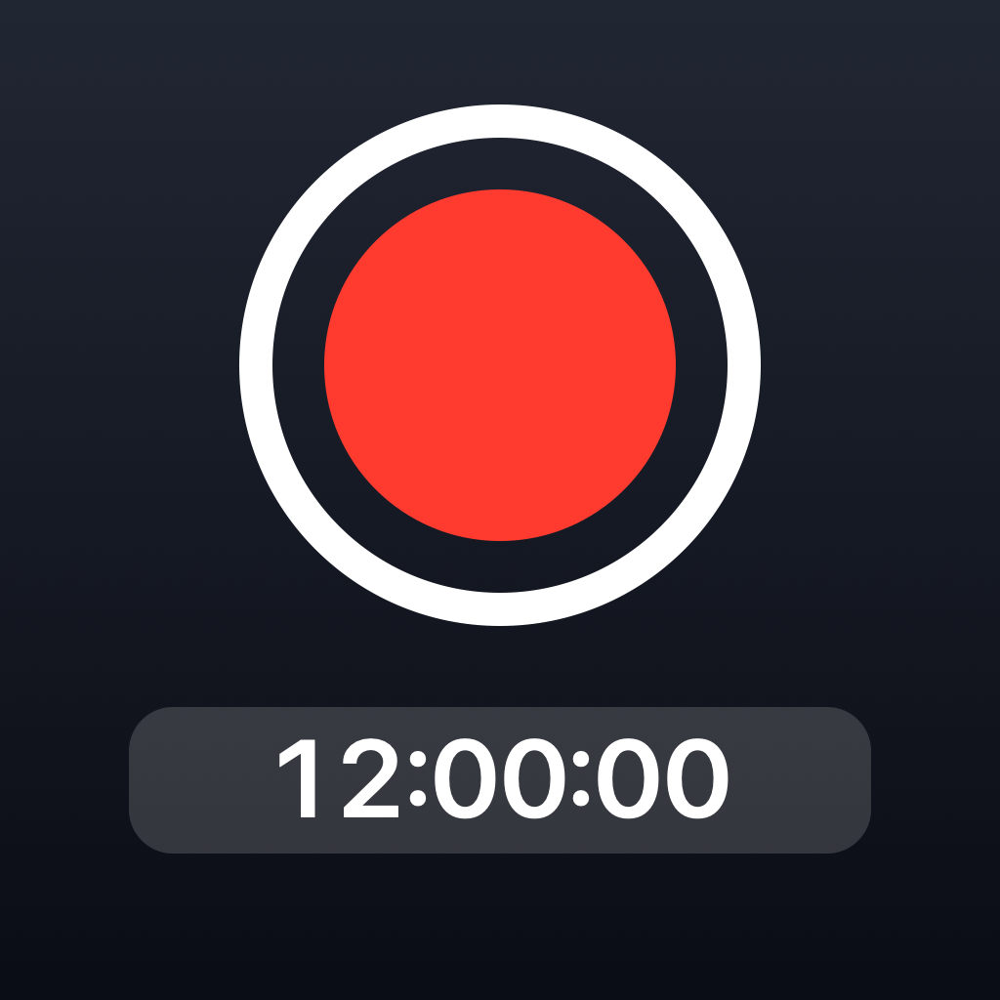

Privacy Policy
Live TimeStamp Camera · Effective November 13, 2026
The short version
Live TimeStamp Camera does not collect, store, share or sell any personal data. Everything the app does happens on your device. The only exceptions are the optional time check and location features described below, which send nothing to us.
Camera and microphone
The app uses the camera and microphone only while it is open, to record the videos you choose to record. The date and time stamp comes from your iPhone's clock, checked against an internet time server when Check time online is on (see below). Recordings are never uploaded to us or to anyone else.
Time check
If you turn on Check time online in Settings (it's off unless you turn it on), the app asks Apple's public time server (time.apple.com) for the current time, and if that can't be reached, reads the time from Apple's website (www.apple.com). These requests contain no personal information, no recordings, and nothing about you or your device beyond what any internet connection reveals, such as your IP address, which we never receive. While it's off, the app makes no time requests.
Location
If you turn on Show location in Settings (it's off unless you turn it on), iOS asks your permission, and the app then uses your iPhone's location while the app is open to show the street address or GPS coordinates on the stamp and to save the location inside the video file. To turn the coordinates into a street address, the app uses Apple's map service, the same one the Maps app uses, under Apple's privacy policy. Your location is never sent to us, never shared with anyone else, and never used in the background. The location is part of each video you record with it on, so anyone you share that video with can see where it was recorded. While it's off, the app does not use your location.
Photos access
The app asks permission to add items to your photo library so it can save your recordings, and any compressed copies you make, there. If you use Delete Video or Delete Original, the app also asks for access to your photo library so it can move that recording to Recently Deleted. It only removes recordings it made, iOS asks you to confirm each time, and nothing is read or sent anywhere.
Recordings kept in the app
While a video is being recorded, and for your most recent recordings, a copy is kept in the app's private storage on your iPhone so it can be recovered if something goes wrong and shared quickly. These copies never leave your device unless you share them yourself.
Purchases
The free trial and the one-time unlock are handled entirely by Apple through the App Store. We never see your name, payment details or Apple Account.
Settings
Your preferences, such as the stamp style and compression size, are stored only on your device.
No accounts, tracking or ads
There are no accounts or sign-ins. The app contains no analytics, advertising, or tracking, and makes no network connections of its own apart from Apple's App Store for purchases, the optional time check to Apple's time servers, and Apple's map service for the optional street address, all described above.
Children
The app collects no information from anyone, including children.
If you email us for support, we use your message and email address only to reply to you.
Changes
If this policy changes, the updated version will be posted on this page with a new effective date.